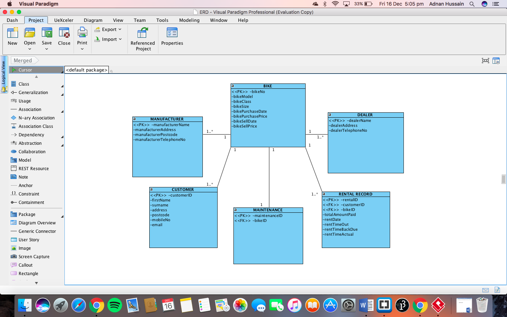

MOHAMMED ADNAN HUSSAIN
MOHAMMED ADNAN HUSSAINI have been using Visual Paradigm for the group assignment in Information Systems. This software enables me to create use case diagrams and entity relationship diagrams. It was a bit complicated to use at first as there were many things to consider, such as the different types of cardinalities.
For the group assignment, we were given a case study on Rays Rentals. The end goal for this is to have a fully working database to replace his existing paper based system. As this is a group assignment, it is abit easier to understand what we need to do as everyone is able to collaborate ideas.
Below, you can see a screenshot of an ERD we created.